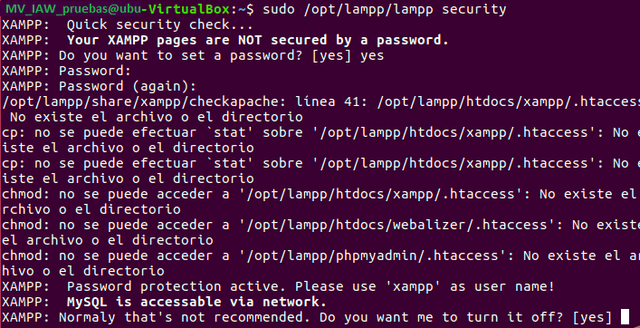
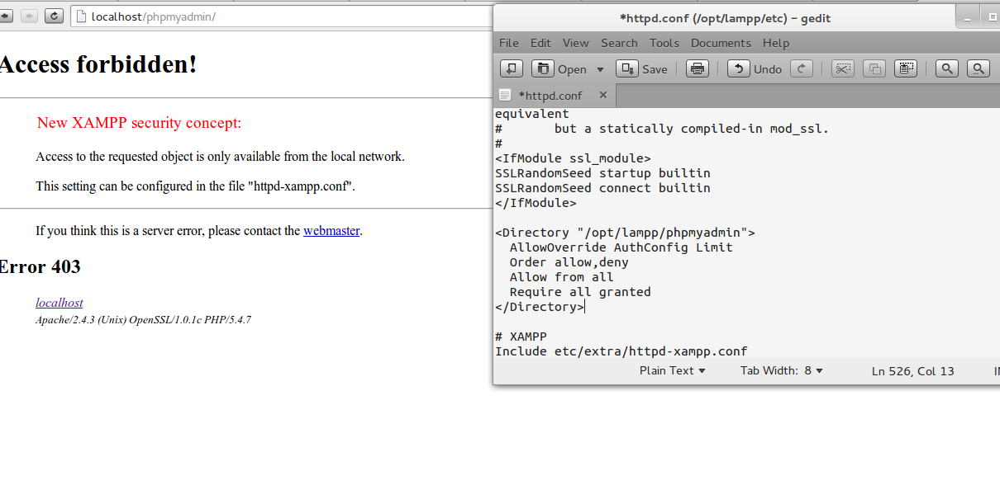

Ejercicio 03.01.05
Seguridad en el servidor XAMPP.
Para el tema de seguridad, como mencione anteriormente, xampp esta configurado
para ser utilizado de forma totalmente abierta, esto es perfecto para entornos locales,
pero para producción puede representar graves problemas,
incluso en entornos LAN nuestras aplicaciones están abiertas a diferentes ataques.
Xampp por defecto presenta los siguientes problemas:
- El usuario root (administrador) de MySQL/MariaDB no tiene contraseña.
- El proceso de MySQL/MariaDB es accesible a través de la red.
- ProFTPD usa una contraseña predefinida, "lammp".
- PhpMyAdmin es accesible a través de la red.
- Apache y MySQL o MariaDB (según sea) corren bajo el mismo usuario nobody
$ sudo /opt/lampp/lampp stop
El siguiente comando ejecuta un script interactivo en la terminal que permite solucionar estos problemas de seguridad.
$ sudo /opt/lampp/lampp security

Ahora tendremos un par de preguntas que nos hará el script para configurar la seguridad del programa, son:
XAMPP: Your XAMPP pages are NOT secured by a password.
XAMPP: Do you want to set a password? [yes]
Y por supuesto queremos cambiar la contraseña. entonces escribimos 'yes'
yes
Presionamos Enter. Anota la contraseña o crea una que recuerdes, es importante para el correcto funcionamiento del programa.
Las siguientes preguntas que realiza el script son similares, lo recomendable es cambiar las contraseñas por defecto y poner varias que nos sean de facil recordatorio.
XAMPP: The MySQL/phpMyAdmin user has no password set!
XAMPP: Do you want to set a password? [yes]
,
XAMPP: MySQL has no root password set!
XAMPP: Do you want to set a password? [yes]
y
XAMPP: The FTP password is still set to 'lampp'.
XAMPP: Do you want to change it? [yes]
Respuesta:
yes
Para todas las preguntas acerca del cambio o asignación de contraseñas.
Por último, debemos poner un nombre y contrasela para el usuario xampp. Con esto tendremos una buena seguridad en XAMPP y en sus paquetes.
The xampp user name is: lampp
Después de haber terminado con la configuración, nos queda volver a iniciar XAMPP. Para ello escribimos en la terminal:
sudo /opt/lammp/lammp start
Tenemos ahora que comprobar que se ha validado el servicio de seguridad, para ello escribimos en el navegador que tengamos:
http://localhost/phpMyAdmin
Como podemos ver, en la figura inferior, la configuración de seguridad se ha guardado correctamente, ya tenemos XAMPP seguro.

En caso de que el error persista, esta es la solución: Hay que editar /opt/lampp/etc/extra/httpd-xampp.conf y agregar las siguiente linea Require all granted abajo de < Directory “/opt/lampp/phpmyadmin” > queda asi:
< Directory “/opt/lampp/phpmyadmin” >
AllowOverride AuthConfig Limit
Order allow,deny
Allow from all
Require all granted
< /Directory >